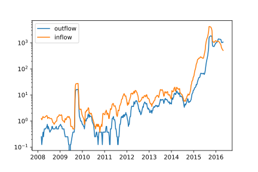

class: middle # Narratives agianst critique ## Communication patterns within the Danish Refugee Solidarity Movement Hjalmar Bang Carlsen <br> PhD at the Department of Sociology and Center for Social Data Science(SODAS), <br>University of Copenhagen <br> hc@soc.ku.dk ??? Jonas Touboel Snorre Ralund --- class: middle ## Overview 1. Background 2. Puzzle 3. Data 4. Methodological Problems and Potentials 5. Narrative/processual methodology 2. Analysis & results 6. Why big social data needs qualitative (text) analysis 7. Concluding Remarks --- class: middle ### Background 1. Political and Cultural Sociology 2. Micro Sociology and Pragmatism 3. Mixed Method approaches to text data ??? STRESS!!! Through out my studies I have worked with textual material and analysis::: ### Text Analysis 1. Controversy Analysis - mapping and document analysis 2. Semantic network analysis for detecting conflict and change 3. Qualitative interpretation(Library Ethnography) and automated text categorization I think this is a very interesting but also challenge methodological problem. --- background-image: url('/Users/hjalmarbangcarlsen/Dropbox/phd_project/phd_project/6. From Act to Activist/plots/refugees_on_the_highway.jpg') ??? In this picture from september 2015 we see refugee walking on the highway many of them try to come to sweden to apply for asylum. This and other pictures where all over the danish press and every citizens toke action. They travel food, transport to sweden. Many of them coordinated their action through grass root groups on Facebook, most of which for quiet a while had been engaged with the refugee issue. This collection of mostely grassroote, what we call the refugee solidarity movement, group mobilized on Facebook is the object of study. --- class: center, middle ### The Growth of the Refugee Solidarity Movement --- class: center, middle # Puzzle ## Why the lack of Contention? ??? - give an introduction to the danish setting, - immergration/integration has been the major political issue for the last many years, the right party The Danish People Party have gone from 12 procent of the vote in last many election from 2001-2011, to in 2015 to be the second largest party with 21 procent of the votes. - The danish people party biggest ideological victory is that they have nearly made immigration a consensus issue in danish politics. All major parties to a larger or smaller extent has started to immitate the rhetorics and the politics of the danish people party. - At the same time you large part of the danish population who see themselves and denmark as place of great openness, great respect for human rights and international conventions and international responsibility. Historically the nation which gave most to international aid per capita - So the puzzle is this in a situation of major mobilization, where the political parties are becoming more hostil to immigration and muslim parts of the population giving no major established political platform to articulate their critique, in highly politized and immigrant hostil environment, a movement of like minded mobilizing on facebook, why is it the frienly style that takes off and becomes the defining feature of this wave of activisme? --- Data 1. 119 Danish Refugee Solidarity Facebook Groups - 640.000 statements - 80.000 users 2. Survey on 2283 activist 3. Over 200.000 Danish Facebook pages (politicians, public figures, news media, etc) from 2008 ‚Äì 2018. - 75 million posts - 4.3 billon likes - 700 million comment - 70 million tags - 3.6 million Danes --- class: middle ### Qualitative Material 1. Followed the Facebook activity of the Movement 2. Read a random sample of 12.000 time ordered posts and comments 3. In depth reading of strategically selected groups --- class: center, middle ### Activity procentage by political block and gender <img src="gender_politics.svg" height="400" width="700"> ??? The movement is highly overrepresented activity from the left side of the political spectrum. Together with graph over the movements growth one could read the development as one of a rising distaticefation with the political parties rhetorics and policies against refugees and immigrants. Then one could see this movement as yet anouther illustration of polirized political climate. But if we read what is going on inside thead the groups where is nearly no contention. So in order to find out what these numbers are expressive of we need to enrich our activity data with text data. And the best way to do this in many settings, I'll to why in the end, is not to jump strieght into quantitative text analysis, but start with qualitative text analyis. --- class: center, middle ### Membership inflow and outflow over time  ??? Yet the inflow and outflow of member in these facebook groups and even more so in other settings greates a rather unstable environment to do qualitative analysis. One central way of learning in qualitative analysis is learning from the authors you read, but if your informants contantly change this becomes very hard. So in the present different ways of mobilization change the setting completely both the tone and the content of communication changed, but also to the point where I felt as if this setting has become a-social, just random people writing something random before leaving for good. --- class: center, middle ### Survivale Function by cohort <img src="Survival function of Activist by Gender.svg" height="400" width="700"> ??? In this respect this survivale graph on the different cohort provides som comfort. The longer you have been active the more chances there is staying active. The graph also tells something else namely that where is something special about cohort 2, these are the people that mobilized before the election periode and many of them are a part of the so called friendly dwellers or the friendly people. --- class: middle ### Interpretating Social Media Data 1. Uncertianty about the "where, what, how, who, why" 2. Thin, fragmented, elusive, ephemoral, artificial , cheap ??? SKAL mere paa her... --- class: middle ### A processual methodology for digital data 1. Formation 2. Process/Narrative 3. Meaning-making and action in Situations ??? 1) By focusing on the formation of culture, of interaction order, group norms and practices, instead of assuming them then the thin, fragmented, elusive, ephemoral characher of social media data suddenly becomes a wellcome feature, because is precisly gives us many different ways to explore when, where, doing what and how with whom things come to gain a specific definitive form and endure. 2) This entails an investigation of the process or narrative has lead to and continuely leads to the reoccurance of the phenomenon of interests. And of course all those things which challenge the stabilization of the phenomenon of interest. 3) These processes are made op of meaning making in situations that have certian consequences for process under study. The reason why this is good for Social Media Data is that is gives us minimal meaingfull unite of analysis from which the formation of traditional objects of inqury can be studied. Now there are three relevant ways of understanding the situation, one is as the conversation and the actors utterance within this, as conversation analysist would two is as a problematique state of affairs which an talks to three is the present others whose presences the speaker has a moral obligation towards, in other words the audience and their assumed experience. If we don't have a sense of these different aspects of the situation then we can't understand what a statement means and what it is trying to do. --- class: middle ## Data potentials 1. Cheap, relational, time-stamped, traceble data on social action 2. intersituational variation and variation over time 3. Narrative accounts 4. Close integretion with Quantitative Analysis ??? Cheap, relational and time-stamped on social action can be used to gather data on axis of variation important for intepretation but are very time consuming, namely what Tavory and Timmerman in their BOOK ABDUCTIVE ANALYSIS call intersituational variation and variation over time. For my argument in the phd this is very important, in that I claim that it was the stabilization of a certian friendly positive group style that hindered contentious, critique politization and not that people simply did not engage in political matters, or did do so on Facebook aso. Seeing variation over time --- class: middle ## Analysis 1. Stabilization of a Friendly group style 2. Undermining the production of contention --- class: middle ### The Formation of a Friendly Group Style & identity 1. Out of a positive psychology initiative 2. Generalized Friendliness and Positivity 3. No us/them and no negativity ??? In 2013 a Facebook group opens that is suppose to make Hjoerring muncipality the most happy in the country, user are asked to train their friendliness muskle, by being friendly, paying attention to other peoples friendliness and telling other people about thier experiences with friendliness. *This wil start a friendliness epidemic.* The post is written by Marete Bonde Pilgaard a educated Nurse, now health consultant. K√¶re Venligboere N√•r vi nu alle skal til at tr√¶ne "venligheds-musklen"...s√• skal vi m√•ske bare starte i det sm√•....Alle √¶ndringer starter med at rette fokus p√• d√©t man vil √¶ndre. L√¶g derfor m√¶rke til n√•r folk er venlige overfor hinanden eller overfor dig. Begynd m√•ske endda at kommentere det positivt...b√•de til "den venlige" men ogs√• til folk efterf√∏lgende. Du vil garanteret bem√¶rke at venligheden smitter! Og s√• er vi jo igang med venligheds-epidemien! Skriv herinde hvordan det g√•r:-) M√•ske har du allerede oplevet noget idag? The story: Some quates narratives that reenact the difference between friendliness and 'negatively' --- ??? --- class: middle <font size="5"> "Dear Friendly Dwellers, Now when we all have to train our "friendliness muscle‚Äù, we have to start with the small things. All change starts with focusing on what one wants to change. Pay attention to other peoples kindness. Even start to comments on it‚Ķ both the friendly person and others. You will start to feel that friendliness is contagious! And then we have a friendliness epidemic! Write in this forum about your experience :-) Maybe you already had an experience today?" MBP 2013-06-24 </font> --- --- ### Generalized Friendliness and the refugee issue <font size="5"> " Smile to the next one you meet<br> Smile to the next you meet and say hello! (Extended Version)<br> Give a family member a big and long hug<br> Make a good cup of coffee for your partner<br> Give a compliment<br> Think a kind thought about yourself!<br> Etc. etc .... <br><br> And then someone says: But it can not change the whole world, Merete!<br> To that I answer: yes it can! ‚ù§Ô∏èüíúüíö<br> And we are already in doing it!<br> We just have to keep going and going and going." MBP 12/09/2015 </font> --- class: middle <font size="4"> "The best way to fight "evil" is to make progress in the "good" as a Chinese saying goes. Each and every one of us must find out what the good in this difficult refugee situation. the Swedes certainly do not think that us transporting refugees to their borders is the "good". So very difficult problem this." Hellen <br> <br> "Just do it God dammit - help refugees in distress when you can feel it's right to do! but why should it be a hallmark one puts on ones clothes like others advertise for expensive well-respected brands. It does not seem serious. Let's keep a non-populist approach to this serious refugee problem. Being friendly is the first step to opening the hearts of other people. I'm from the Alternative, but I wanted dialogue with Danish Peoples Party and wrote to one of them - in a friendly tone. And guess what I got such a positive dialogue, so let's start with talking with those who you do not like us / we do not unders tand or like. I wish we in Denmark can find a collection about this, rather than divide into the evil and the good ..." Hellen <br> <br> "Meet people with kindness<br> Be curious towards people who are different from you<br> Meet others with respect for diversity" Merete </font> --- class: middle ### Undermining the production of contention 1. Filter information and activity 2. Encoding habits of action 3. Capturing and Attuning interaction 4. Moral exceptations to the group setting ??? explain with narrative and quates the way in which the friendly style undermine contentions and critique. --- class: middle ### Why do we need Qualitative Text Analysis? 1. To uncover actual narratives instead of assuming them 2. To ensure the relevance and validity of ones categories 3. Ensure agianst measurement error --- class: center, middle ### Thank you ### hc@soc.ku.dk --- class: center, middle ### Computationally Grounded Theory ### Pattern discovery | Pattern refinement | Pattern confirmation *Laura Nelson 2017* ??? For these reasons and more an approach to categorising textual data which has recently been called computationally grounded theory has had quiet som succes in the major social science journals.The article by Laura Nelson called "Computational Grounded Theory" most plainly and naively articulates the ambitions of this mode of inquiry, which to derive meaning through co-occuring words, work both formally and interpretatively in the effort to measure meaning. She divides op into pattern discovery, pattern refinement and pattern confirmation. **Pattern discovery** The role of computer assisted text analysis in pattern discovery is to reduce the messy complicated text into a simpler more interpretable list or network of words(Nelson 2017: 9). This allows for relevant categories to emerge from the data that the researcher due to their own preconceptions or the complexity of the text had not considered. Thereby inducing the researchers biases into the material. The simpler representation are then interpreted and categorized in a fashion similar to normal content analysis, but unlike human-coded text this process is "fully and immediately reproducible"[@nelson2017computational: 13]. In sum computer-assisted pattern discovery that uses actual frequencies of word (co-)occurrence to locate ideas or concepts in the data constitutes a more "reproducible and scientifically valid grounded theory"[@nelson2017computational: 13]. **pattern refinement** In the pattern refinement step the researcher performances, what Nelson calls, a computationally guided deep reading. This step is suppose to 1) confirm the plausibility, 2) add interpretation and 3) possibly modify the patterns in order to fit better a holistic reading. There are two problems the computational guidance is suppose to solve. One is the natural limits to scale deep reading and secondly our biased reading. Both these concerns are handled by the algorithms that identify texts "that are representative of a particular theme" and that can "calculate the relative prevalence of that category"(Nelson 2017:24). A careful application of these algorithms enable the research to ""read" and interpret any amount of text without the burden of reading the whole text". Furthermore both the researcher and the research community can "trust that then a quote is chosen as an example of something, it is not an outlier but is indeed representative of some theme in the text"(Nelson 2017:24). **pattern confirmation** Seeks to validate the measure with other means. Either a different varibale indicating the same concept, construct validity, or an event which should activate the category, predictive validity aso. --- class: center, middle <img src="steps.png" alt="" height="600" width="700"> ??? Here is a cartoon version of the process. 1) you have a brunch of text, 2) you let some kind of computational process find pattern in the material, weather it is simple word counts, networks of co-occuring words or topic models 3) these pattern are in turn interpreted by the analysist as either being a *usefull* and meaningfull difference in the data or not. If not the analysist changes what is called the preprocessing of the textual material, tries to remove some words, defining the window differently(the length of a word spell wherein a word can be said to co-occure with another), in network analysis we might say something like words have to co-occure 4 times before their relations count or I need to scale the network differently, use another spacialization algorithm aso. This untill they make meaningfull results which the analysist can understand and lable But by what warrant are making all these decision and interpretations? How do they relate to the experience of the actors whos symbolic interaction we categorising? The main validity creteria one hears is that the model or network visualization has to be interpretable or usefull as it is said again and again. But the data is not there to make sense to us, we are here to make sense of the data. One might then say if we assume that symbolic interaction has some kind of order and meaning to it then we most be able to find it with these methods. But here we most remember that we are working on a rather unstable indicator or the actual phenomenon and not the phenomenon itself. We are taking statements located, delinated and related in specific ways and cutting them into discrete words which then use to make inference about the originale statements. This points towards the future problem of operating on words alone, in that they do not in any obvious way tame interpretation, they are multiple, ambigious in their natur that is why we can use the same word in many different statements. Anyone who has looked at a network of words has had the feeling that this could mean anything and nothing. Only when you have clear ideas of what is in network does can it speak to you clearly. It is in this sense highly dependent upon the researchers own frame of reference. But I'm going to quick here becuase computationally grounded approach also reads whole documents engages with deep reading. hence the manipulations and interpretations of words can be justified with reference to the deep reading of documents. There is a very practical reason why does not work, and it is that with large possibly correct manipulations one would quickly have to read impratical many document. The other is that the current sampling procedures for interpreting what a cluster is about relies on a very naive sampling - in Topic Modeling one reads the most predictive documents of given cluster, and in typically network approach one makes a similiar move reading the documents or web pages most connected within the cluster. These strategies area clearly not simple random sampling of any sort but rather what one might call paradigmatic sampling, where one gets the exemplar that tells us something about the rest of the cluster is about. But with paradigmatic sampling or case selection we most trust that the general category of which a document is an exemplar is an interpretatively valid category or else the procedure makes no sense. But the category is itself derived from words relations so it can't be used to justify how these are made. Of course one might say that I'm confusing the context of discovery with the context of justification. In the last step the pattern confirmation step we validate the cateogries that we have found with classical validation measures. But the current validation procedures in topic modeling for example does not ensure us against measurement error and provide proff of interpretative validity of the category. There is a simple reason for this and that is that they do not test weather what they think is in a given cluster is actually in the cluster, they to have a manually codede test through which they see how their own interpretation alignes with the model. Futhermore even if we implimented a procedure of where one would validate ones model with a test set as is normal practice in supervised machine learning, we only some of the way. Both because we can't out of the box trust human interpretation, we only do so after carefull interpretative work which invovles a great deal of learning and reflexivity. But also in making a test set we have to make many decisions that can influence our finale results and which have little and no reference to experience. --- class: center, middle ## Questions ### 1. What, Where, Why and Who are we discovering? ### 2. How are we refining and deep reading? ### 3. Securing good measurement or plausibility of intial discovery? --- class: center, middle ### What could possibly go wrong? --- class: center, middle <img src="reponsiveness_research_question.svg" alt="" height="600" width="600"> ??? We have working paper where we try to show the consequence of the lack of validation procedures, and how easily one can end op with topic model which categories seem sensical from the reading most predictive works and most predictive documents. So what I have talk about alot until now is interpretative validity, now I'll go more into the related problem of measurement error and baises. We'll also change empirical setting abit. So now we are not dealing with Refugee solidarity actvist but what topics danish political parties/politicians write about on thier facebook. So what we interested in besides this simulation test of topic model, is how much the refugee issue dominates the issuescape through time and what role 'likes' play for the allocation of attention amoungst politicians. Thier opputurism or responsiveness if you will. It is the latter the simulations ask to. In order to illustrate the consequences of the measurement issues in Topic modeling we simulated alot of topic modeling research project, from the acceptance of cluster representing a certian topic, to labling the topic and in the last instance using that input into a model that answers which parties are oppertunistic and which are not. That is which parties aligne their attention allocation to topic with the amounts of likes they get. So I'll quickly run over the procedure: 1) constructed a dataset based on dictionary lables that is words that are highly indicative of a topic, where each Facebook post only had one label. With some certainty we could then say that this post was mainly about a certian topic. In the end we where left with a dataset of 46209 documents ranging over 15 different topics. 2) we then ran a LDA topic models with a different number of clusters from 15-30 and ran it a 100 time for each setting this resulted in 1600 different topic models and 36000 different topic candidates(that categorisations of the data). 3) This the topic candidate had many of the words and documents associated with a given topic we would lable is as being that topic. after this we where left with 3000 topics that matched our prior conception on what a topic was. With these 3000 topic candidates we can then compare their precision, that is how many of the those documents that the model and we think are about a given topic is about that topic. --- class: center, middle ??? And that is what we did here. And this is a very worrying result, because the topic candidates that we with current procedures have no have choicing between have very very different precision scores. The median being 63 meaning that 50 procent chance of choicing a topic cluster that has a lower than 63 procent accuracy. One might say that this is not that big of a problem if the lack of accuracy is randomly distributed(an highly unlighly scenario), but lets see. --- class: center, middle <img src="precision_across_topics.svg" alt="" height="700" width="700"> ??? So here we have precision across topics. And it is obvious that the topic model does not threat all Topics equally leading to differential bias. If it did there would be no difference in the box plot above. So the topic model is very bad at measuring elder care, and much better at measuring education. This is of course very problematique in that you will systematically be better as measuring some topic rather then others. --- class: center, middle <img src="differential_bias.svg" alt="" height="700" width="700"> This differential baise is also true across different political parties. Finally for each plausible choice of topics we assess a separate precision score for each party. We then transform each precision score to a standardized distance from the precision norm of the plausible topic. The distribution for each party is reported in figure 4. It shows that the bias is distributed very unevenly across party lines suggesting that comparisons across background characteristics can be highly problematic. In the supplementary material we investigate how the number of training examples for each topic and party could be part of the cause. If we had no problem everthing would be at zero where. --- class: center, middle --- class: center, middle ## computational and interpretative modes of inquiry, a necessary butterfly effect? <img src="butterfly_joke.gif" alt="" height="300" width="500"> --- class: center, middle ### Library Ethnography, narratives and Supervised Machine Learning --- class: center, middle ## Enrich poor activity data with rich textual data ??? Common conception that this should be done with quantitative methods, but I what to argue that qualitative methods